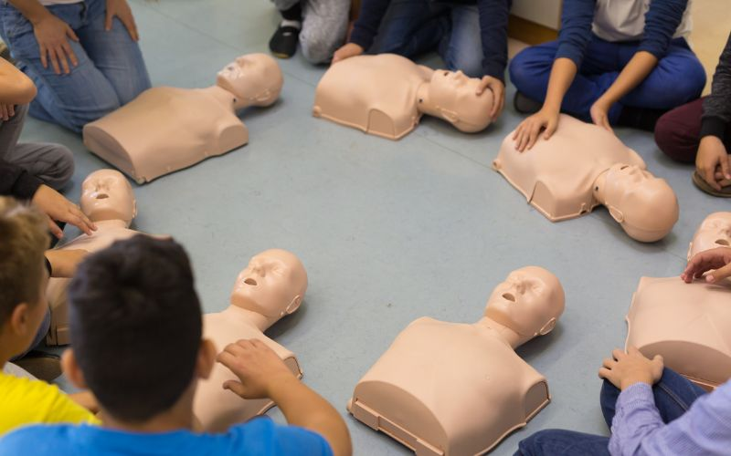
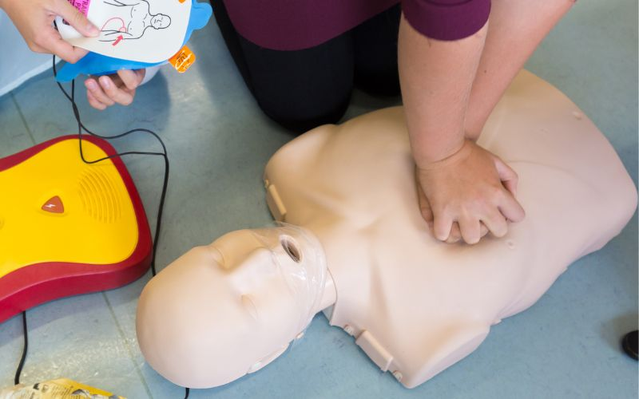

Formation initiale SST
14 heures réparties sur 2 jours : protection, alerte, gestes de premiers secours et rôle préventif du SST. Certificat valable 24 mois.
DécouvrirAccueil Formation secourisme (SST)
SECURIFORM est habilitée centre de formation Sauveteur Secouriste du Travail. Formez-vous aux gestes qui sauvent avec des professionnels du secourisme.
Demander un devisLe Code du travail impose la présence d'au moins un secouriste formé dans les ateliers à travaux dangereux et sur les chantiers de 20 salariés ou plus occupés plus de 15 jours à des travaux dangereux. Au-delà de ces cas, l'INRS recommande de former 10 à 15 % de l'effectif, quelle que soit l'activité de l'entreprise.

14 heures réparties sur 2 jours : protection, alerte, gestes de premiers secours et rôle préventif du SST. Certificat valable 24 mois.
Découvrir
7 heures pour maintenir et actualiser ses compétences, à réaliser avant l'expiration des 24 mois de validité du certificat.
DécouvrirToute intervention de secourisme suit cette même séquence, dans cet ordre, quelle que soit la situation rencontrée.
Repérer les dangers persistants, les supprimer ou en écarter la victime, sans jamais se mettre soi-même en danger.
Faire alerter ou alerter directement les secours (15, 18 ou 112), en donnant une localisation précise et l'état de la victime.
Pratiquer les gestes adaptés à l'état de la victime, en attendant l'arrivée des secours professionnels.
Un repère synthétique : la formation SST permet de reconnaître ces situations et de réagir avec les bons gestes, dans le calme.
| Situation | Signes | Geste principal |
|---|---|---|
| Arrêt cardiaque | Ne répond pas, ne respire pas | Massage cardiaque et défibrillateur dès que possible |
| Étouffement | Ne peut plus parler ni tousser | Claques dans le dos, puis manœuvre de Heimlich |
| Inconscience | Ne répond pas, mais respire | Position latérale de sécurité (PLS) |
| Malaise | Vertiges, douleurs, difficultés à parler | Mise au repos, surveillance, alerte si aggravation |
Elle l'est dès lors que vous employez du personnel dans un atelier à travaux dangereux, ou sur un chantier de 20 salariés ou plus occupés plus de 15 jours à des travaux dangereux. En dehors de ces cas, l'INRS recommande tout de même de former 10 à 15 % de l'effectif, quelle que soit l'activité.
À titre indicatif, l'INRS recommande environ 5 à 8 SST pour 50 salariés, et 10 à 15 pour 100 salariés, en tenant compte des rotations d'équipes, des absences et de la répartition sur plusieurs sites.
Le certificat est valable 24 mois. Avant son expiration, le salarié doit suivre un MAC (Maintien et Actualisation des Compétences) de 7 heures pour prolonger sa validité de 24 mois supplémentaires.
Le salarié perd son statut de SST tant qu'il n'a pas suivi de nouvelle formation. Un MAC suffit généralement en cas de retard raisonnable après expiration ; au-delà, une formation initiale complète de 14 heures peut être nécessaire.
Oui. Au quotidien, le SST est aussi un relais de prévention : il peut repérer des situations dangereuses et les signaler à sa hiérarchie, contribuant ainsi à l'amélioration continue de la sécurité dans l'entreprise.
Complétez ce formulaire, notre équipe revient vers vous rapidement pour organiser votre session.
Afin de renforcer l'équipe SECURIFORM, nous recrutons des formateurs sur toute la France.
Notre équipe vous répond rapidement et construit avec vous la formation adaptée aux risques de votre entreprise, partout en France.
03 20 67 34 90Au-delà de la formation, SECURIFORM réalise les Vérifications Générales Périodiques de vos équipements de travail et de levage, conformément à la réglementation en vigueur.
Découvrir les VGP